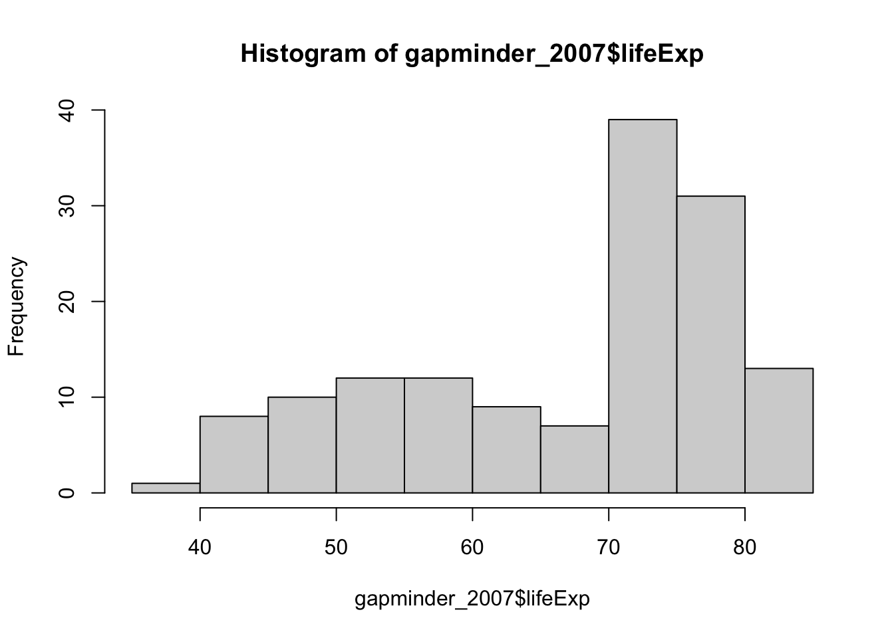
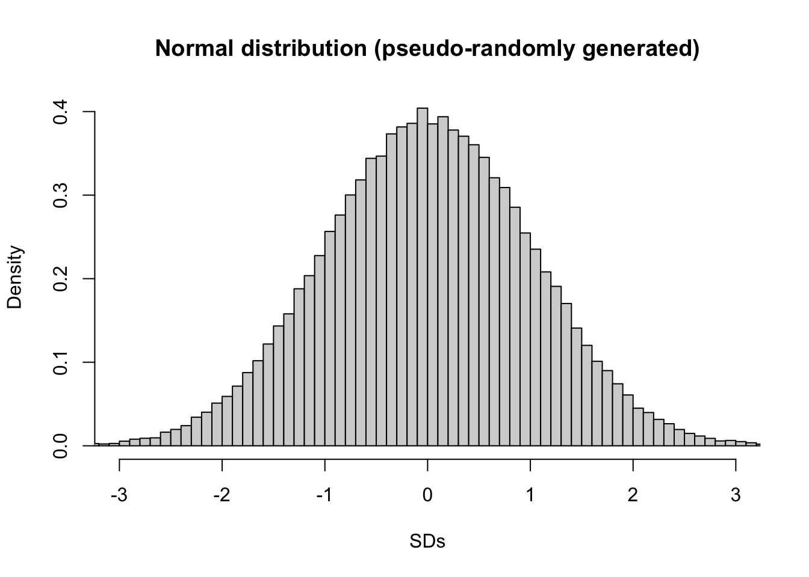
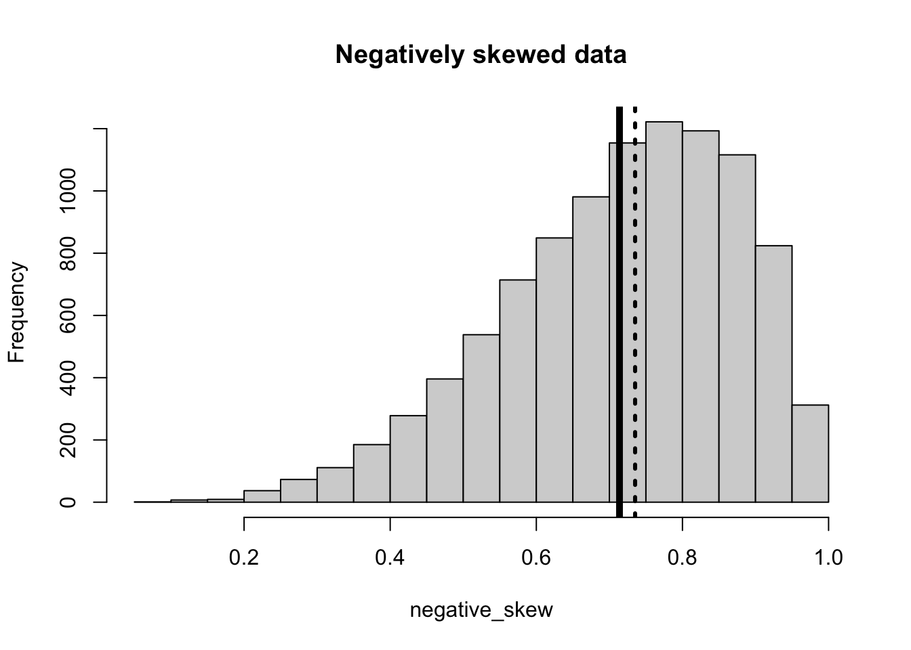
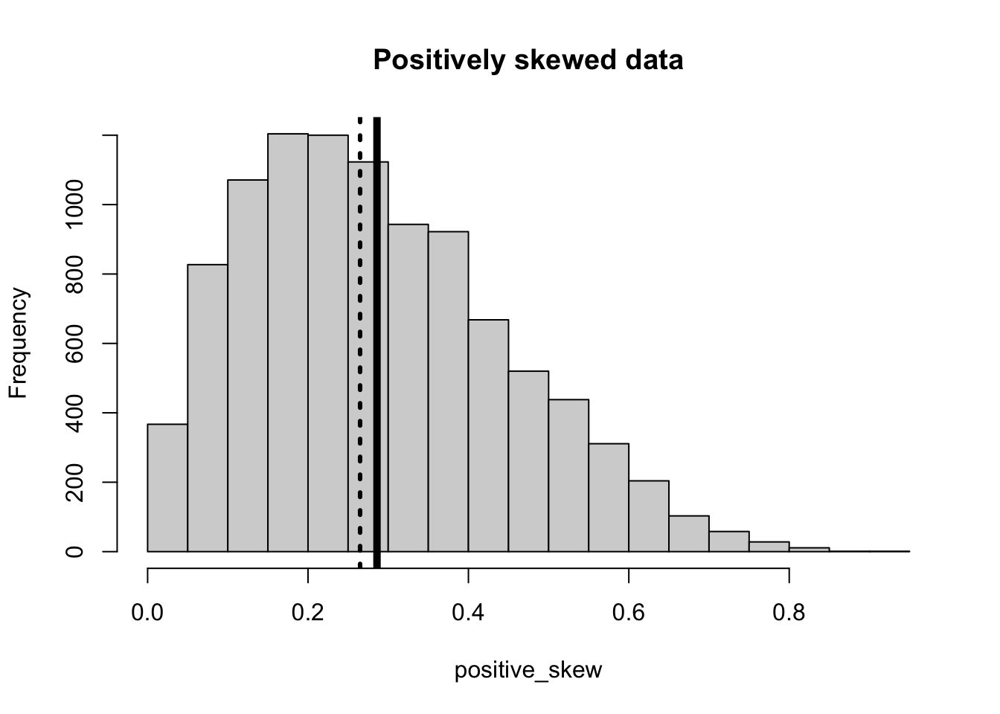

Lets just imagine we want to summarise the life expectancy of people across the world. Using the gapminder [https://www.gapminder.org/] dataset that is freely available about the world, we can look at the distribution of life expectancies across countries in 2007:
# load the gapminder datalibrary(gapminder)# create a new data frame that only focuses on data from 2007gapminder_2007 <-subset( gapminder, # the data set year ==2007)# lets have a look at the datagapminder_2007
# A tibble: 142 × 6
country continent year lifeExp pop gdpPercap
<fct> <fct> <int> <dbl> <int> <dbl>
1 Afghanistan Asia 2007 43.8 31889923 975.
2 Albania Europe 2007 76.4 3600523 5937.
3 Algeria Africa 2007 72.3 33333216 6223.
4 Angola Africa 2007 42.7 12420476 4797.
5 Argentina Americas 2007 75.3 40301927 12779.
6 Australia Oceania 2007 81.2 20434176 34435.
7 Austria Europe 2007 79.8 8199783 36126.
8 Bahrain Asia 2007 75.6 708573 29796.
9 Bangladesh Asia 2007 64.1 150448339 1391.
10 Belgium Europe 2007 79.4 10392226 33693.
# … with 132 more rows
# ℹ Use `print(n = ...)` to see more rows
# and now plot a histogram of the life expectancy data to see the distributionhist(gapminder_2007$lifeExp)

So whilst this histogram visualises the distribution of the data, it’s helpful to be able to statistically quantify (i.e. give numbers that represent) this distribution. Remember that for many statistical tests (parametric) it’s helpful to have data that is normally distributed. Normally distributed data (also known as Gaussian distributions and associated with parametric statistics) generally looks like a bell curve:
# generating random data to fit a normal distribution.norm_data <-rnorm(100000, # the number of samplesmean=0, # the mean (which in this case should be almost identical to the median)sd=1# the standard deviation)hist( norm_data,breaks =100, # the number of bins (the more bins there are, the thinner each bin is)xlim =c(-3,3), # the range of the x-axisfreq =FALSE, # changes the y-axis from reporting the absolute frequency to reporting the relative densityxlab ="SDs", main ="Normal distribution (pseudo-randomly generated)")

So we can see when comparing the shape of life expectancies and the shape of a normal distribution that the two aren’t the same. There are 3 things we’ll look for to quantify how much of a problem we have with our current distribution:
skewness
kurtosis
Skewness
Data can be negatively skewed, where the mean is less than the median:
# Skewed to the rightnegative_skew =rbeta(10000,5,2)hist(negative_skew, main ="Negatively skewed data")abline(v=mean(negative_skew), # where the line for the mean will be lwd=5)abline(v=median(negative_skew), lwd=3,lty=3)

The thick lines represents the mean; the dashed lines represents the median. The bigger the distance between these, the less normally distributed your data is. (seecentral tendancybelow)
Or positively skewed, where the median is less than the mean:
# Skewed to the leftpositive_skew =rbeta(10000,2,5)hist(positive_skew, main="Positively skewed data")abline(v=mean(positive_skew), # where the line for the mean will be lwd=5)abline(v=median(positive_skew), # where the line for the median will belwd=3,lty=3)

The thick lines represents the mean; the dashed lines represents the median. The bigger the distance between these, the less normally distributed your data is. (see central tendancy below)
So now that we know what skewed distributions look like, we now need to quantify how much of a problem with skewness there is. If we add together the amount of skewness for each data point together and then divide by a general summary of the total standard deviation, then you get an estimate of skewness. The next section is a breakdown of the formula for those interested in it (but this is not crucial), but the key point point is that outliers skew the data, and so outliers that are larger than the mean positively skew the data, and outliers below the mean negatively skew it. If there are an equal number of outliers on either side of the mean then the data will not be skewed.
Optional
If we want to manually calculate skewness:
\[
\tilde{\mu_{3}} = \sum((\frac{x_i- \bar{x}{}} {\sigma} )^3) * \frac{N}{(N-1) * (N-2)}
\] To do this in R you could calculate it manually
# applying this to the positive skew data abovepositive_skew_n =length(positive_skew)positive_skewness =sum(((positive_skew -mean(positive_skew))/sd(positive_skew))^3) * ( positive_skew_n / ((positive_skew_n-1) * (positive_skew_n -2)))# to show the output:positive_skewness
[1] 0.56013
… or just
use code from https://stackoverflow.com/a/54369572 to give you values for skewness (this has been chosen as this gives skewness and its standard error as calculated by major software like SPSS and JASP):
# Skewness and kurtosis and their standard errors as implement by SPSS## Reference: pp 451-452 of# http://support.spss.com/ProductsExt/SPSS/Documentation/Manuals/16.0/SPSS 16.0 Algorithms.pdf# # See also: Suggestion for Using Powerful and Informative Tests of Normality,# Ralph B. D'Agostino, Albert Belanger, Ralph B. D'Agostino, Jr.,# The American Statistician, Vol. 44, No. 4 (Nov., 1990), pp. 316-321spssSkewKurtosis=function(x) { w=length(x) m1=mean(x) m2=sum((x-m1)^2) m3=sum((x-m1)^3) m4=sum((x-m1)^4) s1=sd(x) skew=w*m3/(w-1)/(w-2)/s1^3 sdskew=sqrt( 6*w*(w-1) / ((w-2)*(w+1)*(w+3)) ) kurtosis=(w*(w+1)*m4 -3*m2^2*(w-1)) / ((w-1)*(w-2)*(w-3)*s1^4) sdkurtosis=sqrt( 4*(w^2-1) * sdskew^2/ ((w-3)*(w+5)) ) mat=matrix(c(skew,kurtosis, sdskew,sdkurtosis), 2,dimnames=list(c("skew","kurtosis"), c("estimate","se")))return(mat)}spssSkewKurtosis(positive_skew)
estimate se
skew 0.5601300 0.02449122
kurtosis -0.2318387 0.04897755
However, this value is not very meaningful by itself to confirm whether there’s a significant problem with skewness. To address this, lets use the skewness standard error (see above), to calculate a z-score. Z-scores can capture how significant a value is, i.e. how unlikely the number is considering what you would normally expect. In this case, when you divide skewness by standard error, you get a z-score, and if the absolute value (i.e. ignoring whether it is positive or negative) of the z-score is greater than 1.96 then it is significantly skewed. If you want to understand why 1.96 is the main number, check out the subsection on normal distributions.
you can calculate the standard error of skewness as below: